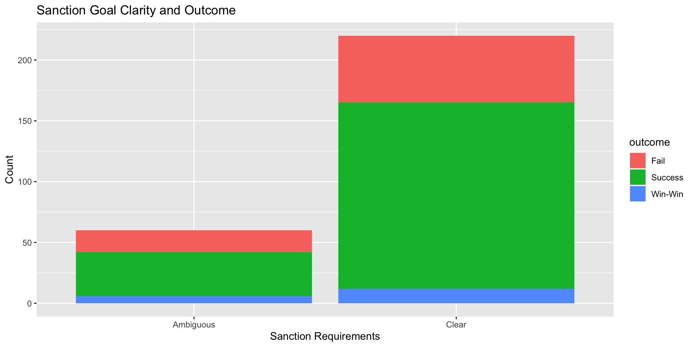

My final project
library(readxl)
sanction <- read_excel("~/Desktop/dataverse_files/IST_JPR_Attia&Grauvogel.xlsx")
library(tidyverse)
data_sanction <- sanction|>
select(-sender, -target, -startdate, -terdate, -defactoter, -ongoing, -gradual, -datasets, -sourceimp, - sourceter, -instinvestment, -comment, -goals, -costsender)
data_sanction <- data_sanction |>
mutate(expiry = case_when(expiry == 0 ~ "no expiry",
expiry == 1 ~ "will expire"),
review = case_when(review == 0 ~ "no review",
review == 1 ~ "specific temporal review"),
adaptgoal = case_when(adaptgoal == 0 ~ "no change",
adaptgoal == 1 ~ "adjusted goal"),
negotiations = case_when(negotiations == 0 ~ "no negotiations",
negotiations == 1 ~ "negotiated"),
saliance = case_when(targetsalience < sendersalience ~ "assymetric stakes",
targetsalience == sendersalience~ "equal stakes",
targetsalience > sendersalience~ "self-defence stakes"),
costtarget = case_when(costtarget == "Major" | costtarget == "Severe" ~ "Economically Damaging",
costtarget == "Minor" ~ "Minor damages"),
sender = str_split(caseid, "_", simplify = TRUE)[, 1],
target = str_split(caseid, "_", simplify = TRUE)[, 2],
year = str_split(caseid, "_", simplify = TRUE)[, 3],
year = as.numeric(year),
year = if_else(year >= 48, year + 1900, year + 2000)
)
data_sanction <- data_sanction |>
mutate_all(~ifelse(. %in% c("Blank"), NA, .)) |>
na.omit() |>
mutate_all(~ifelse(. %in% c("missing"), NA, .)) |>
na.omit() |>
drop_na() |>
mutate(outcome = case_when(outcome == "Sender capitulation" ~ "Fail",
outcome == "Stalemate" ~ "Fail",
outcome == "Target complete acquiescence" ~ "Success",
outcome == "Target partial acquiescence" ~ "Success",
grepl("Negotiated settlement", outcome) ~ "Win-Win" )) # success defined as sender obtains goals through target partial or complete acquiescence (win-lose), failure defined as sender capitulating to target or target obtaining stalemate (lose-win or lose-lose), win-win defined as negotiated settlement
sender_data <- data_sanction |>
group_by(sender, outcome) |>
summarise(count = n())
sender_plot <- ggplot(sender_data, mapping = aes(x = reorder(sender, -count), y = count, fill = outcome)) +
geom_col() +
theme(axis.text.x = element_text(angle = 90)) +
labs(title = "Sanction Senders and Outcomes Sanctions", x = "Senders", y = "Count")
print(sender_plot)sanction_effectiveness <- data_sanction |>
group_by(requirementter, outcome) |>
summarise(count = n())
effective_plot <- ggplot(sanction_effectiveness, mapping = aes(x = requirementter, y = count, fill = outcome)) +
geom_col() + labs(title = "Sanction Goal Clarity and Outcome", x = "Sanction Requirements", y = "Count")
print(effective_plot) 
The sanction senders proportion clearly highlights the dominance of US initiated sanctions compared to the international organisations. This is one indication of potentially abuse of sanctions based on economic power. The outcomes of these sanctions also highlight that something else is at play. Success is defined as sender obtains goals through target partial or complete acquiescence (win-lose), failure is defined as sender capitulating to target or target obtaining stalemate (lose-win or lose-lose), win-win defined as negotiated settlement for both target and sender. The US initiated sanctions have a much lower probability of success – a greater distribution goes to failures and win-wins. When looking at the second graph of Sanction Goal Clarity and Outcome, it shows that the distribution of outcomes remains proportional for both ambiguous and clear terms of sanction. This eliminates sanction designs itself as explanation for the difference in US sanction outcomes. Therefore, it points to external forces exerting pressures on sanction outcomes – and points towards further research to look at perhaps economic and military disparity between sender and target.
###Notes unfair_sanc <- data_sanction |> group_by(review, expiry, negotiations, adaptgoal) |> summarise(count = n()) |> drop_na()
knitr::kable(unfair_sanc)
test <- data_sanction |> mutate_variable_on_permutation <- function(var, condition1, condition2, condition3, condition4) { conditions <- c(condition1, condition2, condition3, condition4)
# Generate all permutations of 3 conditions perms <- combn(conditions, 3)
# Check each column (permutation) for all TRUE values for (i in 1:ncol(perms)) { if (all(perms[, i])) { # If all conditions in the permutation are TRUE, mutate the variable var <- var + 1 # Replace this line with your desired mutation logic } }
return(var) }
knitr::kable(test)
<div class="layout-chunk" data-layout="l-body">
<div class="sourceCode"><pre class="sourceCode r"><code class="sourceCode r"><span><span class='kw'><a href='https://rdrr.io/r/base/library.html'>library</a></span><span class='op'>(</span><span class='va'><a href='https://haven.tidyverse.org'>haven</a></span><span class='op'>)</span></span>
<span><span class='va'>cow</span> <span class='op'><-</span> <span class='fu'><a href='https://haven.tidyverse.org/reference/read_dta.html'>read_dta</a></span><span class='op'>(</span><span class='st'>"~/Downloads/NMC_Supplement_v4_0.dta"</span><span class='op'>)</span> <span class='op'>|></span></span>
<span> <span class='fu'><a href='https://dplyr.tidyverse.org/reference/select.html'>select</a></span><span class='op'>(</span><span class='va'>stateabb</span>, <span class='va'>year</span>, <span class='va'>tpop</span><span class='op'>)</span></span>
<span></span>
<span><span class='va'>cow_sender</span> <span class='op'><-</span> <span class='va'>cow</span> <span class='op'>|></span></span>
<span> <span class='fu'><a href='https://dplyr.tidyverse.org/reference/rename.html'>rename</a></span><span class='op'>(</span>sender <span class='op'>=</span> <span class='va'>stateabb</span>,</span>
<span> tpop_sender <span class='op'>=</span> <span class='va'>tpop</span><span class='op'>)</span></span>
<span></span>
<span><span class='va'>cow_target</span> <span class='op'><-</span> <span class='va'>cow</span> <span class='op'>|></span></span>
<span> <span class='fu'><a href='https://dplyr.tidyverse.org/reference/rename.html'>rename</a></span><span class='op'>(</span>target <span class='op'>=</span> <span class='va'>stateabb</span>,</span>
<span> tpop_target <span class='op'>=</span> <span class='va'>tpop</span><span class='op'>)</span></span>
<span></span>
<span><span class='va'>new_sanctions</span> <span class='op'><-</span> <span class='va'>data_sanction</span> <span class='op'>|></span></span>
<span> <span class='fu'><a href='https://dplyr.tidyverse.org/reference/mutate-joins.html'>left_join</a></span><span class='op'>(</span><span class='va'>cow_sender</span>, by <span class='op'>=</span> <span class='fu'><a href='https://rdrr.io/r/base/c.html'>c</a></span><span class='op'>(</span><span class='st'>"sender"</span>, <span class='st'>"year"</span><span class='op'>)</span><span class='op'>)</span> <span class='op'>|></span></span>
<span> <span class='fu'><a href='https://dplyr.tidyverse.org/reference/mutate-joins.html'>left_join</a></span><span class='op'>(</span><span class='va'>cow_target</span>, by <span class='op'>=</span> <span class='fu'><a href='https://rdrr.io/r/base/c.html'>c</a></span><span class='op'>(</span><span class='st'>"target"</span>, <span class='st'>"year"</span><span class='op'>)</span><span class='op'>)</span></span></code></pre></div>
</div>
This table is a rough overview of some hypothesised indicators in the sanction terms that might indicate unfair sanctions. Specifically, the combination of no review timeline, no expiry, no negotiations, and goal adjustment indicate a breakdown in communications between sender and target, and is the most forceful in achieving desired sanction goals.^[Julio Solis, Book 1]
See this book [(Solis 2023)](https://www.openai.com/)
### Action item: The theory for sanction terms is currently lacking as it is only a hypothesis, and would thus require secondary readings to prove that these are sound indicators of unfair sanctions.
<div class="layout-chunk" data-layout="l-body">
<div class="sourceCode"><pre class="sourceCode r"><code class="sourceCode r"><span><span class='va'>plot_data</span> <span class='op'><-</span> <span class='va'>data_sanction</span> <span class='op'>|></span></span>
<span> <span class='fu'><a href='https://dplyr.tidyverse.org/reference/group_by.html'>group_by</a></span><span class='op'>(</span><span class='va'>multilateralism</span>, <span class='va'>costtarget</span><span class='op'>)</span> <span class='op'>|></span></span>
<span> <span class='fu'><a href='https://dplyr.tidyverse.org/reference/summarise.html'>summarise</a></span><span class='op'>(</span>count <span class='op'>=</span> <span class='fu'><a href='https://dplyr.tidyverse.org/reference/context.html'>n</a></span><span class='op'>(</span><span class='op'>)</span><span class='op'>)</span></span>
<span></span>
<span><span class='va'>multilateralism_plot</span> <span class='op'><-</span> <span class='fu'><a href='https://ggplot2.tidyverse.org/reference/ggplot.html'>ggplot</a></span><span class='op'>(</span><span class='va'>plot_data</span>, mapping <span class='op'>=</span> <span class='fu'><a href='https://ggplot2.tidyverse.org/reference/aes.html'>aes</a></span><span class='op'>(</span>x <span class='op'>=</span> <span class='fu'><a href='https://rdrr.io/r/stats/reorder.factor.html'>reorder</a></span><span class='op'>(</span><span class='va'>multilateralism</span>, <span class='op'>-</span><span class='va'>count</span><span class='op'>)</span>, y <span class='op'>=</span> <span class='va'>count</span>, fill <span class='op'>=</span> <span class='va'>costtarget</span><span class='op'>)</span><span class='op'>)</span> <span class='op'>+</span></span>
<span> <span class='fu'><a href='https://ggplot2.tidyverse.org/reference/geom_bar.html'>geom_col</a></span><span class='op'>(</span><span class='op'>)</span> <span class='op'>+</span> </span>
<span> <span class='fu'><a href='https://ggplot2.tidyverse.org/reference/theme.html'>theme</a></span><span class='op'>(</span>axis.text.x <span class='op'>=</span> <span class='fu'><a href='https://ggplot2.tidyverse.org/reference/element.html'>element_text</a></span><span class='op'>(</span>angle <span class='op'>=</span> <span class='fl'>90</span><span class='op'>)</span><span class='op'>)</span> <span class='op'>+</span></span>
<span> <span class='fu'><a href='https://ggplot2.tidyverse.org/reference/labs.html'>labs</a></span><span class='op'>(</span>title <span class='op'>=</span> <span class='st'>"Sanction Senders and Economic Damage of Sanctions"</span>, x <span class='op'>=</span> <span class='st'>"Senders' Multilateral Action"</span>, y <span class='op'>=</span> <span class='st'>"Count"</span><span class='op'>)</span></span>
<span></span>
<span><span class='va'>multilateralism_plot</span></span></code></pre></div>
<img src="index_files/figure-html5/unnamed-chunk-3-1.png" width="624" />
</div>
This plot shows the proportion of multilateral to unilateral actions in the sanctions with the economic damages of the sanctions -- and it is observable that US seems to be a unilateral actor in majority of the sanctions. It is significant that US unilateral sanctions with economic damages seems to rival all but one of their multilateral sanction in terms of objective cases. This could be both an assessment of individual stakeholder's effectiveness of sanctions, and an indication of unilateral aggression. Depending on further analysis, this could either mean that sanctions are only weaponised when the stakeholders involved are decisive actors, or that US has a disproportionate monopoly over sanctions as a diplomatic weapon.
### Action item: Examine the breakdown of sanction methods and relation to unfair sanctions (mentioned in previous table) through a treatment of either factors. This can highlight the relationship between actors and their multilateral actions and the repercussions of the sanctions.
<div class="layout-chunk" data-layout="l-body">
<div class="sourceCode"><pre class="sourceCode r"><code class="sourceCode r"><span><span class='va'>sanction_effectiveness</span> <span class='op'><-</span> <span class='va'>data_sanction</span> <span class='op'>|></span></span>
<span> <span class='fu'><a href='https://dplyr.tidyverse.org/reference/group_by.html'>group_by</a></span><span class='op'>(</span><span class='va'>requirementter</span>, <span class='va'>outcome</span><span class='op'>)</span> <span class='op'>|></span></span>
<span> <span class='fu'><a href='https://dplyr.tidyverse.org/reference/summarise.html'>summarise</a></span><span class='op'>(</span>count <span class='op'>=</span> <span class='fu'><a href='https://dplyr.tidyverse.org/reference/context.html'>n</a></span><span class='op'>(</span><span class='op'>)</span><span class='op'>)</span></span>
<span></span>
<span><span class='va'>effective_plot</span> <span class='op'><-</span> <span class='fu'><a href='https://ggplot2.tidyverse.org/reference/ggplot.html'>ggplot</a></span><span class='op'>(</span><span class='va'>sanction_effectiveness</span>, mapping <span class='op'>=</span> <span class='fu'><a href='https://ggplot2.tidyverse.org/reference/aes.html'>aes</a></span><span class='op'>(</span>x <span class='op'>=</span> <span class='va'>requirementter</span>, y <span class='op'>=</span> <span class='va'>count</span>, fill <span class='op'>=</span> <span class='va'>outcome</span><span class='op'>)</span><span class='op'>)</span> <span class='op'>+</span></span>
<span> <span class='fu'><a href='https://ggplot2.tidyverse.org/reference/geom_bar.html'>geom_col</a></span><span class='op'>(</span><span class='op'>)</span> <span class='op'>+</span> <span class='fu'><a href='https://ggplot2.tidyverse.org/reference/labs.html'>labs</a></span><span class='op'>(</span>title <span class='op'>=</span> <span class='st'>"Sanction Goal Clarity and Outcome"</span>, x <span class='op'>=</span> <span class='st'>"Sanction Requirements"</span>, y <span class='op'>=</span> <span class='st'>"Count"</span><span class='op'>)</span></span>
<span> </span>
<span><span class='va'>effective_plot</span></span></code></pre></div>
<img src="index_files/figure-html5/unnamed-chunk-4-1.png" width="624" />
</div>
This last plot helps to establish a baseline of sanction effectiveness. While there are significantly more sanctions with clear requirements that have succeeded, it is important to note that the proportion of fails, success and win-wins remains constant regardless of the clarity of sanction requirement. This means that differences in outcome relies on external factors beyond sanction terms, which exposes sanctions to more external factors that could be affected by geopolitical wills or simply the rule of might is right.
### Action item: It would be interesting to treat sanction outcome with the issue salience as well to check whether the compliance with sanctions has more to do with the interests of the sender and target. It would reveal whether the outcome is more significntly explained by its own terms, or by external factors. It would also be interesting to perform regression analysis to test for significance, p-value and r-squared to check the significance in explanability.
## Project Milestone 2
I have downloaded data here https://dataverse.harvard.edu/dataset.xhtml?persistentId=doi:10.7910/DVN/SVR5W7
Attia, Hana; Julia Grauvogel, 2022, "International Sanctions Termination Dataset", https://doi.org/10.7910/DVN/SVR5W7, Harvard Dataverse, V1
The data set records international sanctions put in place from 1990 to 2018. The variables I am interested in studying for the dataset are:
1) Measures: there are a total of 11 measures that can be grouped into roughly economic, military and diplomatic sanctions
2) Goals: Democracy support, Support human rights, Address armed conflict, Nuclear non-proliferation, Stop proliferation or usage of weapons of mass destruction, Counterterrorism, Stop drug trafficking, and Address convention breach.
a) Whether there is an adaptation of goals over sanction duration
3) Outcome: acquiscience, capitulation or stalemate
4) Sender (santioning country) economic cost
5) Target (sanctioned country) economic cost
6) Negotiations over termination: whether there is a presence of bilateral engagement as signifier of attempt towards change
7) Multilateralism: whether there tends to be a coalition of senders for a sanction
8) Expiry date: whether there is a sunset clause written into sanctions
9) Target issue salience: how criticially does the sanction hurt the sanctioend country
10) Sender issue salience: how critically does imposing the sanction hurt the country
<div class="layout-chunk" data-layout="l-body">
<div class="sourceCode"><pre class="sourceCode r"><code class="sourceCode r"><span><span class='co'>#install.packages("readxl")</span></span>
<span><span class='kw'><a href='https://rdrr.io/r/base/library.html'>library</a></span><span class='op'>(</span><span class='va'><a href='https://readxl.tidyverse.org'>readxl</a></span><span class='op'>)</span></span>
<span><span class='va'>IST_JPR_Attia_Grauvogel</span> <span class='op'><-</span> <span class='fu'><a href='https://readxl.tidyverse.org/reference/read_excel.html'>read_excel</a></span><span class='op'>(</span><span class='st'>"~/Desktop/dataverse_files/IST_JPR_Attia&Grauvogel.xlsx"</span><span class='op'>)</span></span></code></pre></div>
</div>
# Preamble:
Steven Pinker argued in "The Better Angels of Our Nature: Why Violence Has Declined" that the world is currently in the most peaceful era of human history. A neo-liberal view of the international system we currently enjoy would support him and claim that cooperation and non-violence is the norm as nation-states have more interwoven interests that raises the cost of war to prohibitive levels. A realist, however, would disagree and see the anarchy of international disorder simply change its form -- from kinetic warfare to economic warfare, from gunpowder to the dollar.
I am interested in seeing whether it is true that the methods of conflict had simply transformed itself with the rules permitted by the neo-liberal international system, or whether the international system had in fact substantively changed its predisposition for peace. It would be a more comparative approach to trace sanction's change and continuity over time.
# Research Question:
"Have sanctions become an instrument abused by nation-state aggressors to initiate a new front for international conflict?"
# Hypothesis
If it is true that sanctions have been transformed into a new front, I hypothesise that there are a few observables:
1) Less multilateral cohesiveness. Sanctions risk becoming instrumentalised by nation-states to achieve bilateral interests through lobbying to the international community. Therefore, the presence of multilateral support behind a sanction highlights a more broad-based consensus of peace, and an absence of it indicates greater specificity in targeting, and potentially more unilateral aggression from the sender nation-state.
2) Less consistent goals. Goals of the sanction that are articulated and then changed points to inconsistency in a nation-state's stance. The shifting of goal posts possibly shows that the sanctions are less concerned with outcome and is treated as a means to service nation-state's ends.
3) Outcome of sanction matched with the sender and target economic costs. Traditional kinetic conflict hurts everyone but incurs costs that are mostly borne by the loser. Thus, economic costs of sanctions can be an indicator of whether the success of an outcome is simply achieved through brute force that the target can no longer swallow, or whether there were more facilitative negotiations that reinforce neo-liberal systems.
4) Absence of expiry date. More hardline sanctions that could potentially lead to stalemate and fester the wounds of conflict can be seen as an act of aggression. It also indicates less interwoven interests and undermines the assumption that the international system is premised on win-win or lose-lose situations. This can also be expected if sanctions show a trend of being less salient to the sender compared to the target, where asymmetry benefits aggressors and become a tool of choice.
# Follow Up Action
To further my understanding of how to interpret the data, I will be pursuing the following lines of actions:
1) Literature review of sanctions and their use and abuse
2) Qualitative analysis that complements overly economic data analysis in quantifying the outcomes of sanctions
3) Determine unit of measurement: when were sanctions conceived of as good for peaceful conflict resolution, and when did they "become" more popularly abused.
```{.r .distill-force-highlighting-css}